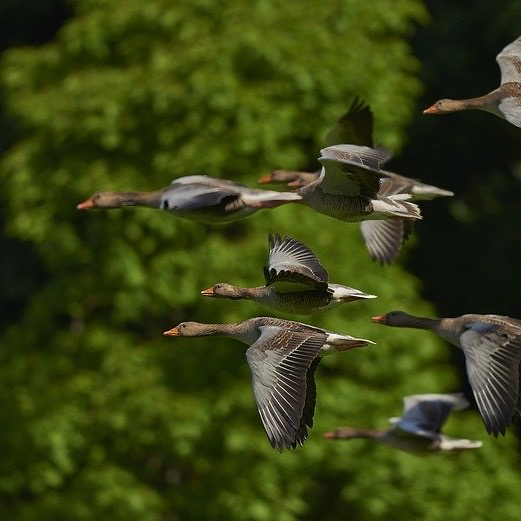
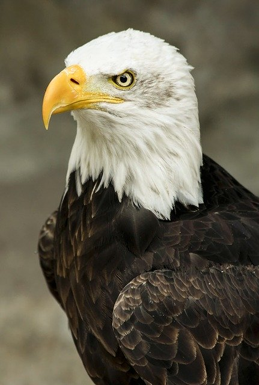

1. Ptaki definicja
Ptaki (Aves) – gromada stałocieplnych zwierząt z podtypu kręgowców. Jest najbardziej zróżnicowaną spośród gromad kręgowców lądowych – istnieje około 10 tys. gatunków ptaków, które zamieszkują ekosystemy na całym świecie. Ich wielkość waha się od 5 cm u koliberka hawańskiego do 2,7 m u strusia.  genetyczna i zapis kopalny wskazują na to, że ptaki są nowoczesnymi dinozaurami, które ewoluowały od wcześniej upierzonych dinozaurów z grupy teropodów. Najbliższymi żyjącymi krewnymi ptaków są krokodyle. Charakterystyczne dla ptaków nowoczesnych (Neornithes) są: skóra wytwarzająca pióra, przednie kończyny przekształcone w skrzydła, szczęki okryte rogowym dziobem, u współczesnych przedstawicieli pozbawionym zębów, lekki, mocny szkielet i czterodziałowe serce. Ptaki są zazwyczaj zdolne do lotu (choć niektóre gatunki są wtórnie nielotne) – ich układ pokarmowy oraz oddechowy są przystosowane do tej zdolności. Poza tym odznaczają się wysoką aktywnością metaboliczną. Rozmnażają się przez składanie i wysiadywanie otoczonych twardą skorupą jaj. Niektóre ptaki, szczególnie krukowate i papugowe należą do najbardziej inteligentnych gatunków zwierząt, zdolnych do tworzenia i używania przyrządów pomocniczych, jak i przekazujących tę wiedzę następnym pokoleniom[2].
{kind=link}
2. Ptaki cechy budowy ciała
Pióra
Pióra są cechą charakterystyczną ptaków. Spełniają wiele różnorodnych funkcji: umożliwiają latanie, zapewniają izolację, która pomaga w termoregulacji i są używane podczas godów oraz do kamuflażu i dawania sygnałów[27]. Jest kilka typów piór, z których każdy służy do innych celów. Pióra są wytworami epidermy przyczepionymi do skóry i wyrastają tylko ze specyficznych miejsc na skórze zwanych pteryliami. Rozmieszczenie pteryliów ma znaczenie w taksonomii i systematyce. Ułożenie i wygląd piór na ciele, zwane upierzeniem, może być różne u gatunków w zależności od wieku, statusu społecznego[58] i płci[59]. Upierzenie jest regularnie zrzucane. Standardowe upierzenie, które powstaje podczas pierzenia po okresie rozrodczym jest znane jako „upierzenie nierozrodcze” lub – w terminologii Humphrey-Parkes – jako „upierzenie podstawowe”. „Upierzenie rozrodcze” lub odmiany „upierzenia podstawowego” znane są w systemie Humphrey-Parkes jako „upierzenie alternatywne”[60]. Pierzenie następuje zwykle raz w roku, chociaż niektóre ptaki mogą zrzucać upierzenie dwa razy w roku, a duże ptaki drapieżne mogą pierzyć się tylko raz na kilka lat. Sposoby pierzenia są różne u różnych gatunków. U niektórych lotki ze skrzydeł są zrzucane i odrastają, zaczynając od zewnętrznych piór do wewnętrznych (dośrodkowo), a niektóre wymieniają pióra, zaczynając od tych, które znajdują się wewnątrz (odśrodkowo). Niewielka liczba gatunków, np. kaczki i gęsi, traci wszystkie lotki jednocześnie, stając się czasowo niezdolnymi do lotu[61]. Dośrodkowe zrzucanie sterówek występuje np. u kurowatych[62]. Odśrodkowe zrzucanie sterówek jest spotykane m.in. u dzięciołów i pełzaczowatych, chociaż zaczyna się od drugiego wewnętrznego pióra i kończy na centralnym, więc ptak zachowuje funkcjonalność ogona[63]. U wróblowych lotki pierwszorzędowe wymieniane są do zewnątrz, lotki drugorzędowe do wewnątrz, a sterówki od centrum na zewnątrz[64]. Przed sezonem lęgowym samice większości gatunków ptaków tracą pióra w pobliżu brzucha. Skóra w tym miejscu jest dobrze zaopatrzona w naczynia krwionośne i pomaga ptakowi w wysiadywaniu jaj[65
Szkielet
Szkielet składa się z wielu lekkich kości. Mają one duże jamy wypełnione powietrzem (zwane jamami pneumatycznymi), połączone z układem oddechowym[25]. Powietrzem nie są wypełnione tylko kości dłoni, czaszki, miednicy i przedramienia[26]. Kości czaszki są połączone i nie widać między nimi szwów. Oczodoły są duże i oddzielone kostną przegrodą. Kręgosłup składa się z odcinka szyjnego, piersiowego, lędźwiowego i ogonowego, z bardzo różnorodną liczbą kręgów szyjnych. Odcinek szyjny jest szczególnie elastyczny, ale ruchomość jest ograniczona w przedniej części odcinka piersiowego i nieobecna w dalszych kręgach. Kręgi odcinka lędźwiowego są zrośnięte z miednicą, tworząc synsakrum[27], a ostatnie kręgi odcinka ogonowego tworzą pygostyl[28]. Żebra są spłaszczone, a mostek (z wyjątkiem nielotów) jest zaopatrzony w grzebień stanowiący przyczep dla mięśni biorących udział w lataniu. Kończyny przednie są przekształcone w skrzydła[29]. Charakterystyczne dla ptaków są również obojczyki zrośnięte w widełki (furcula) oraz żebra mostkowe złożone z dwóch części połączonych ruchomo, co umożliwia zmiany objętości klatki piersiowe
Układ oddechowy
Ptaki mają jeden z najbardziej skomplikowanych układów oddechowych ze wszystkich zwierząt[27]. Ich płuca są pozbawione opłucnej[26]. Podczas wdechu 75% świeżego powietrza omija płuca i kieruje się bezpośrednio do tylnych worków powietrznych, które ciągną się od płuc i łączą z przestrzeniami powietrznymi w kościach. Pozostałe 25% powietrza płynie bezpośrednio do płuc. Podczas wydechu zużyte powietrze wydostaje się z płuc, a powietrze zachowane w tylnych workach powietrznych jest jednocześnie przenoszone do płuc. Dzięki temu świeże powietrze przepływa przez płuca ptaka zarówno podczas wdechu, jak i wydechu[39]. Ptaki wydają dźwięki za pomocą krtani tylnej – mięśniowej komory z kilkoma błonami bębenkowymi, która znajduje się na dolnym końcu tchawicy, czyli tam, gdzie rozdziela się ona na oskrzela[40
Układ pokarmowy
Układ pokarmowy ptaków jest unikatowy – zawiera wole, służące do przechowywania pokarmu, oraz żołądek mięśniowy, w którym znajdują się połknięte kamienie rozcierające pokarm i rekompensujące brak zębów[36]. Większość ptaków jest przystosowanych do szybkiego trawienia, aby ułatwić latanie[37]. Niektóre ptaki wędrowne mają też zdolność do redukcji części jelita przed migracją[38
Układ krwionośny
Serce ptaków jest czterodziałowe i do krążenia ogólnego wychodzi z niego prawy łuk aorty (w przeciwieństwie do ssaków, które mają lewy łuk aorty)[27]. Krew żylna uchodzi do prawego przedsionka, a następnie przepływa do prawej komory, skąd wypływa do płuc. Z płuc krew wraca do lewego przedsionka, a następnie lewej komory, z której uchodzi aorta[26]. Żyła główna dolna przenosi krew od kończyn przez układ wrotny nerek. W przeciwieństwie do ssaków, krwinki czerwone ptaków mają jądro[41]. Układ krwionośny umożliwia utrzymywanie stałej temperatury ciała ptaków, która wynosi 39,5°C[26].
3. Lot
Siły oddziaływujące podczas lotu
Na posuwające się ku przodowi skrzydło ptaka działa siła oporu powietrza, którą można rozłożyć na dwie składowe. Jedna z nich dźwiga skrzydło ku górze, druga hamuje ruch postępowy. Wzajemny stosunek tych składowych zależy od kształtu skrzydła, szybkości ruchu, kąta nachylenia skrzydła w stosunku do kierunku ruchu, a także od takich mniej ważnych okoliczności jak temperatura, wzniesienie nad poziom morza itd. Okazało się, że najkorzystniejszy stosunek sił przy zwykłych szybkościach lotu występuje wówczas, gdy kąt nachylenia skrzydła względem kierunku ruchu wynosi około 3–4°. Wówczas siła dźwigająca jest stosunkowo największa, a siła hamująca najmniejsza. Pod tym kątem ustawione są zwykle skrzydła ptaków w locie szybującym.  Siła dźwigająca skrzydło ku górze powstaje tylko wówczas, gdy ptak posuwa się ku przodowi w stosunku do powietrza. Tymczasem powietrze hamuje ruch postępowy. Aby móc posuwać się naprzód, ptak musi więc albo machać skrzydłami, albo – jeśli znajduje się na dużej wysokości – może uzyskać szybkość przez wykorzystanie siły ciążenia. Jeśli prąd powietrza płynie szybko ku górze, szybujący ptak może się wznosić bez poruszania skrzydłami. Przyciąganie ziemskie pełni tu funkcję podobną do funkcji sznurka od latawca.
{kind=link}
Energia lotu
Ptak może wyzwolić w locie duże ilości energii. Przykładem mogą być przeloty ptaków lądowych nad morzem, albo np. następujące obserwacje uzyskane doświadczalnie. Mewy mogą unosić się w tunelu aerodynamicznym (w miejscu, przy szybkości powietrza wynoszącej około 30 km/godz.) bez przerwy przez około 10 godzin. W godzinie lotu zużywają one wówczas ok. 0,5% masy ciała, spalając prawie wyłącznie tłuszcz. Po dziesięciu godzinach tracą więc ok. 5% ciężaru ciała. Ponieważ zaś ptaki potrafią gromadzić tyle tłuszczu, że tworzy on połowę ich masy, zrozumiałe jest, że mogą dokonywać dalekich przelotów wiosennych i jesiennych. Lot jest najekonomiczniejszym sposobem poruszania się kręgowców lądowych. Gołąb np. zużywa ok. cztery dżule na gram ciała i kilometr odległości, zaś podobnych rozmiarów szczur zużywa w tych warunkach ok. 67,2 dżuli, leming aż 168 dżuli, natomiast podobnej wielkości ryba tylko ok. 2 dżule (Tucker 1969).
Utrata zdolnosci lotu
Wiele gatunków utraciło zdolność lotu. Znika ona wówczas, gdy jest zbyteczna, a więc u dużych ptaków stepowych, którym wystarcza ucieczka piechotą, u rozmaitych ptaków wyspiarskich, niestykających się z drapieżnikami, jak np. kiwi na Nowej Zelandii, wreszcie u niektórych ptaków wodnych, np. u pingwinów, niektórych kormoranów i alk. Lot jest wprawdzie ekonomicznym sposobem pokonywania odległości, ale nie zawsze dalekie wędrówki są konieczne. Zaoszczędzoną dzięki rezygnacji z lotu energię można przeznaczyć na produkcję jaj lub na opiekę nad potomstwem. Widocznie w pewnych środowiskach taka strategia okazuje się najwłaściwsza.